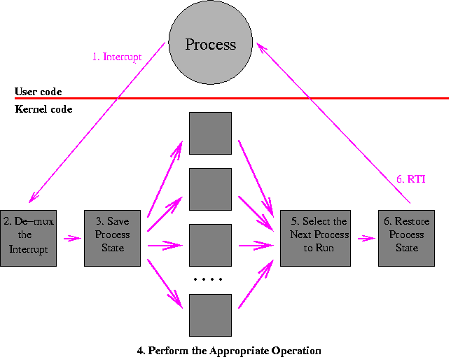
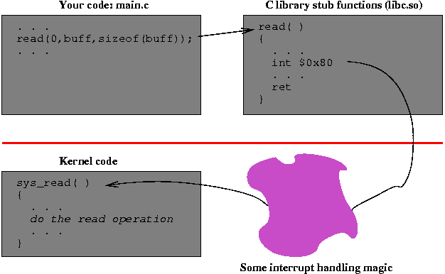

Chapter 3B
User and Kernel Addresse Spaces
In a modern operating system, each user process runs in its own address space, and the kernel operates in its protected space. At the processor level (machine code level), the main distinction between the kernel and a user process is the ability to access certain resources such as executing privileged instructions, reading or writing special registers, and accessing certain memory locations.
The separation of user process from user process insures that each processes will not disturb each other. The separation of user processes from the kernel insures that users processes will not be able to arbitrarily modify the kernel or jump into its code. It is important that processes cannot read the kernel's memory, and that it cannot directly call any function in the kernel. Allowing such operations to occur would invalidate any protection that the kernel wants to provide.
Operating systems provide a mechanism for selectively calling certain functions in the kernel. These select functions are called kernel calls or system calls, and act as gateways into the kernel. These gateways are carefully designed to provide safe functionality. They carefully check their parameters and understand how to move data from a user process into the kernel and back again. We will discuss this topic in more detail in the Memory Management section of the course.
The Path In and Out of the Kernel
The only way to enter the operating kernel is to generate a processor interrupt. Note the emphasis on the word "only". These interrupts come from several sources:
-
I/O devices: When a device, such as a disk or network interface, completes its current operation, it notifies the operating system by generating a processor interrupt.
-
Clocks and timers: Processors have timers that can be periodic (interrupting on a fixed interval) or count-down (set to complete at some specific time in the future). Periodic timers are often used to trigger scheduling decisions. For either of these types of timers, an interrupt is generated to get the operating system's attention.
-
Exceptions: When an instruction performs an invalid operation, such as divide-by-zero, invalid memory address, or floating point overflow, the processor can generate an interrupt.
-
Software Interrupts (Traps): Processors provide one or more instructions that will cause the processor to generate an interrupt. These instructions often have a small integer parameter. Trap instructions are most often used to implement system calls and to be inserted into a process by a debugger to stop the process at a breakpoint.
The flow of control is as follows (and illustrated below):
-
The general path goes from the executing user process to the interrupt handler. This step is like a forced function call, where the current PC and processor status are saved on a stack.
-
The interrupt handler decides what type of interrupt was generated and calls the appropriate kernel function to handle the interrupt.
-
The general run-time state of the process is saved (as on a context switch).
-
The kernel performs the appropriate operation for the system call. This step is the "real" functionality; all the steps before and after this one are mechanisms to get here from the user call and back again.
-
if the operation that was performed was trivial and fast, then the kernel returns immediately to the interrupted process. Otherwise, sometime later (it might be much later), after the operation is complete, the kernel executes its short-term scheduler (dispatcher) to pick the next process to run.
Note that one side effect of an interrupt might be to terminate the currently running process. In this case, of course, the current process will never be chosen to run next!
- The state for the selected process is loaded into the registers and control is transferred to the process using some type of "return from interrupt" instruction.

The System Call Path
One of the most important uses of interrupts, and one of the least obvious when you first study about operating systems, is the system call. In your program, you might request a UNIX system to read some data from a file with a call that looks like:
rv = read(0,buff,sizeof(buff));
Somewhere, deep down in the operating system kernel, is a function that
implements this read operation.
For example, in Linux, the routine is called sys_read().
The path from the simple read() function call in your program to the
sys_read() routine in the kernel takes you through some interesting
and crucial magic.
The path goes from your code to a system call
stub function that contains a trap or interrupt instruction,
to an interrupt handler in the kernel,
to the actual kernel function.
The return path is similar, with the addition of
some important interactions with the process dispatcher.

System Call Stub Functions
The system call stub functions provide a high-level language interface to a function whose main job is to generate the software interrupt (trap) needed to get the kernel's attention. These functions are often called wrappers.
The stub functions on most operating systems do the same basic steps. While the details of implementation differ, they include the following:
- set up the parameters,
- trap to the kernel,
- check the return value when the kernel returns, and
- if no error: return immediately, else
- if there is an error: set a global error number variable (called "errno") and return a value of -1.
Below are annotated examples of this code from both the Linux (x86) and Solaris (SPARC) version of the C library. As an exercise, for the Linux and Solaris versions of the code, divide the code into the parts described above and label each part.
x86 Linux read (glibc 2.1.3)
read: push %ebx
mov 0x10(%esp,1),%edx ; put the 3 parms in registers
mov 0xc(%esp,1),%ecx
mov 0x8(%esp,1),%ebx
mov $0x3,%eax ; 3 is the syscall # for read
int $0x80 ; trap to kernel
pop %ebx
cmp $0xfffff001,%eax ; check return value
jae read_err
read_ret: ret ; return if OK.
read_err: push %ebx
call read_next ; push PC on stack
read_next: pop %ebx ; pop PC off stack to %ebx
xor %edx,%edx ; clear %edx
add $0x49a9,%ebx ; the following is a bunch of
sub %eax,%edx ; ...messy stuff that sets the
push %edx ; ...value fo the errno variable
call 0x4000dfc0 <__errno_location>
pop %ecx
pop %ebx
mov %ecx,(%eax)
or $0xffffffff,%eax ; set return value to -1
jmp read_ret ; return
SPARC Solaris 8
read: st %o0,[%sp+0x44] ! save argument 1 (fd) on stack
read_retry: mov 3,%g1 ! 3 is the syscall # for read
ta 8 ! trap to kernel
bcc read_ret ! branch if no error
cmp %o0,0x5b ! check for interrupt syscall
be,a read_retry ! ... and restart if so
ld [%sp+0x44],%o0 ! restore 1st param (fd)
mov %o7,%g1 ! save return address
call read_next ! set %o7 to PC
sethi %hi(0x1d800), %o5 ! the following is a bunch of
read_next: or %o5, 0x10, %o5 ! ...messy stuff that sets the
add %o5,%o7,%o5 ! ...value of the errno variable
mov %g1, %o7 ! ...by calling _cerror. also the
ld [%o5+0xe28],%o5 ! ...return value is set to -1
jmp %o5
nop
read_ret: retl
nop
Interrupt Handling and the Interrupt Vector
When an interrupt occurs, the hardware takes over and forces a control transfer that looks much like a function call. The destination of the control transfer depends on the type of interrupt. Interrupt types include things such as divide by zero, memory errors, and software interrupts (such as from the "int" instruction). The code that handles a particular type of interrupt is called (cleverly enough) an interrupt handler. As control is transferred to the appropriate interrupt handler, the process saves the PC and processor status on a special kernel stack.
The operating system sets up a table, usually called the interrupt vector, that contains one entry per type of interrupt. On the x86, this table is called the Interrupt Descriptor Table and an entry in the table is called a gate. Each vector entry contains the address of the interrupt handler for its interrupt.
In addition to branching and saving the PC and processor status, the processor will switch from a state where only certain parts of memory can be accessed and where certain instructions are prohibited ( user mode) to a state where all operations are permitted ( system mode).
Saving State and Invoking the Kernel Function
Below is a slightly simplified version of the Linux code that is called to handle a system call trap.
The first part of the code (starting at system_call)
saves the registers of the user process and plays around with the
memory management registers so that the kernel's
internal data is accessible.
It also finds the process table entry for this user process.
The trap instruction that caused the entry to the kernel has a
parameter that specifies which system call is being invoked.
The code starting at do_call checks to see if this
number is in range, and then calls the function associated with
this system call number.
When this function returns, the return value (stored in the eax
register) is saved in the place where all the other user registers
are stored.
As a result, when control is transferred from the kernel back to the
user process, the return value will be in the right place.
After the system call is complete, it is time to return to the user process. There are two choices at this point: (1) either return directly the the user process that made the system call or (2) go through the dispatcher to select the next process to run.
ret_from_sys_call
system_call:
#
#----Save orig_eax: system call number
# used to distinguish process that entered
# kernel via syscall from one that entered
# via some other interrupt
#
pushl %eax
#
#----Save the user's registers
#
pushl %es
pushl %ds
pushl %eax
pushl %ebp
pushl %edi
pushl %esi
pushl %edx
pushl %ecx
pushl %ebx
#
#----Set up the memory segment registers so that the kernel's
# data segment can be accessed.
#
movl $(__KERNEL_DS),%edx
movl %edx,%ds
movl %edx,%es
#
#----Load pointer to task structure in EBX. The task structure
# resides below the 8KB per-process kernel stack.
#
movl $-8192, %ebx
andl %esp, %ebx
#
#----Check to see if system call number is a valid one, then
# look-up the address of the kernel function that handles this
# system call.
#
do_call:
cmpl $(NR_syscalls),%eax
jae badsys
call *SYMBOL_NAME(sys_call_table)(,%eax,4)
# Put return value in EAX of saved user context
movl %eax,EAX(%esp)
#
#----If we can return directly to the user, then do so, else go to
# the dispatcher to select another process to run.
#
ret_from_sys_call:
cli # Block interrupts; iret effectively re-enables them
cmpl $0,need_resched(%ebx)
jne reschedule
# restore user context (including data segments)
popl %ebx
popl %ecx
popl %edx
popl %esi
popl %edi
popl %ebp
popl %eax
popl %ds
popl %es
addl $4,%esp # ignore orig_eax
iret
reschedule:
call SYMBOL_NAME(schedule)
jmp ret_from_sys_call
Copyright © 2015, 2018 Barton P. Miller